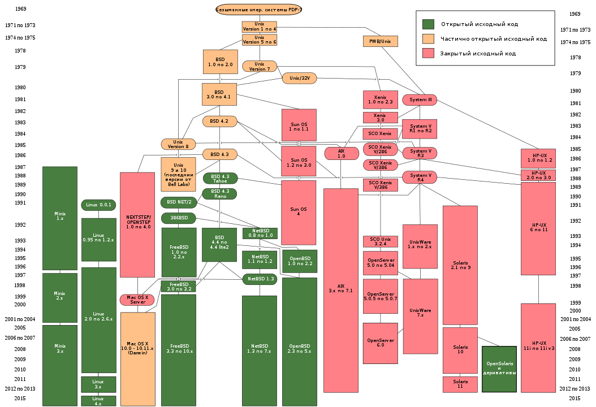

Первая ОС
GM-НАА была первой операционной системой для компьютеров. Она была создана в 1955 году Робертом Патриком с General Motors и Оуэном Моком с North American Aviation. Она была основана на системном мониторе и работала на больших машинах. Основная функция GM-НАА — автоматическое выполнение новой программы, когда старая программа завершилась.
Возникновение Unix
Первая система UNIX была разработана в 1969 году в подразделении Bell Labs компании AT & T. С тех пор было создано большое количество различных UNIX-систем.Некоторые отличительные признаки UNIX-систем включают в себя:
1) Использование текстовых файлов для настройки и управления системой;
2) Широкое применение утилит, запускаемых в командной строке;
3) Взаимодействие с пользователем посредством виртуального устройства — терминала;
4) Представление физических и виртуальных устройств как файлов.
Идеи, заложенные в основу UNIX, оказали огромное влияние на развитие компьютерных операционных систем. В настоящее время UNIX-системы признаны одними из самых исторически важных ОС. Эта операционная система популяризирует идею иерархической файловой системы с произвольной глубиной вложенности.

Linux
Linux была создана в 1991 году Линусом Торвальдсом, финским студентом. Тот факт, что Линус сразу после создания ОС выложил исходный код своей ОС в Интернет, был решающим в дальнейшей судьбе Linux. Хотя в 1991 году Интернет еще не был так широко распространен, как в наши дни, зато пользовались им в основном люди, которые имеют достаточную техническую подготовку. И уже с самого начала Торвальдс получил несколько заинтересованных отзывов с предложением помочь в разработке, на что Линус ответил согласием, и уже через полгода к разработке присоединились сотни, потом сотни тысяч добровольных помощников.В силу того, что исходные коды Linux распространяются свободно и общедоступно, к развитию системы с самого начала подключилось большое число независимых разработчиков.
MS-DOS
MS-DOS — коммерческая операционная система фирмы Microsoft для IBM PC-совместимых персональных компьютеров. MS-DOS работает в режиме реального времени процессора x86. Обеспечивается единовременное выполнение только одной программы. MS-DOS была спроектирована так, чтобы пользователи могли легко заменить встроенный интерпретатор посторонними интерпретаторами командной строки, например 4DOS.
Windows
В 1985 году появляется первая версия Windows, которая не была оценена пользователями и ее проигнорировали. Возможно потому, что она всего лишь дополняла возможности DOS, будучи фактически графической оболочкой и надстройкой над комплектом MS-DOS.
Со временем, система Windows все более совершенствовалась, появилась полноценная графика, лишила пользователей от видения системных файлов, был преодолен барьер многозадачности, что позволяет запустить 2-3 программы.В 1992 году с момента возникновения Windows 3.1, по мнению многих пользователей и профессионалов, новые возможности ОС были оценены по достоинству. С версии Windos3.1 ОС получила начало 32-разрядная доступность к жесткому диску.
В 1998 году, 25 июня, новая OC Windows 98 вышла на рынок потребителей. Преимуществом, по сравнению с предыдущими образцами, были: полная интеграция с Интернетом, более совершенное управление интерфейсом, новый процессор Pentium II, графический портал AGP, шина USB.
iOS и Android
IOS — мобильная операционная система, созданная на ядре Linux и разрабатываемой и выпускаемой американской компанией Apple. Была выпущена в 2007 году изначально — для iPhone и iPod Touch. Сейчас же она установлена на всех устройствах Apple. Такие нововведения как мобильный браузер Safari, визуальная голосовая почта, виртуальная клавиатура сделали IOS одной из наиболее популярных систем для смартфонов
Андроид — система, которая наиболее динамично развивается, разработанна для смартфонов(изначально для коммунникаторов(Айфон и его тачскрин изменили мнение Гугла)). Она является упрощенным вариантом аналогичных систем Windows и Linux, используемых на стационарных ПК и ноутбуках, ориентированной для тачскрина. Платформа Андроид состоит из операционной системы, интерфейса, связывающего ПО и мощных приложений..
История развития OS
| Год |
Система |
| 1971 | Выпуск первой редакции UNIX (Uniplexed Information and Computing System -Брайн Керниган). |
| 1975 | Билл Гейтс и Пол Аллен создали фирму Microsoft |
| 1977 | Microsoft выпускает новый программный продукт - Microsoft FORTRAN для компьютеров с операционной системой CP/M |
| 1981 | Microsoft заканчивает работу над MS-DOS. |
| 1983 | Создание OS-NET компании Novell. Звезда на базе Motorolla 68000. Специализация функций файл-сервера |
| 1985 | Microsoft наконец-то выпустил первую версию Windows и первую программу для неё - графический редактор In'A'Vision. С большой задержкой появляется и долгожданный Microsoft Excel для Macintosh. |
| 1987 | Совместный проект Microsoft и IBM OS/2 - первая многозадачная ОС для ПЭВМ Intel 286. Сетевые оболочки LAN-Manager, LAN-Server. Разработка протокола NetBIOS |
| 1988 | Windows 3.0 |
| 1988 | Microsoft выпускает пакет Microsoft Office для Macintosh. |
| 1991 |
5-го октября Торвальд Линус объявил первую "официальную" версию Linux, версия 0.02. В это время Linux уже мог выполнять bash (the GNU
Bourne Again Shell) и gcc (the GNU C compiler). |
| 1992
|
Microsoft выпускает DOS 6.0 и Windows 3.1. |